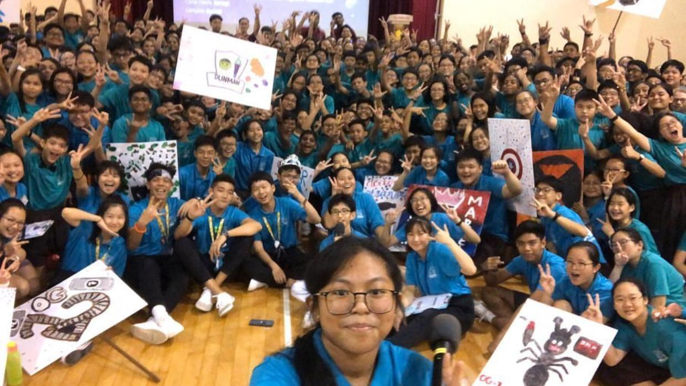
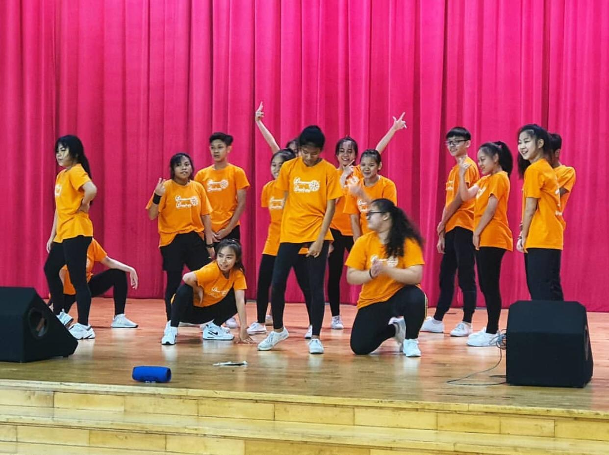

The first week of school started with a day camp filled with fun activities to learn more about the school. We were all split into OGs (Orientation Groups) and each OG had students from all over the cohort.
That was the first time we had an opportunity to make friends. Some of us were really shy but our seniors who organised the camp made sure that we enjoyed our time. They were really kind and easy people to talk to.
We were really excited about it and our seniors didn't fail to keep the whole 3 day camp as fun and enjoyable as possible. We concluded the camp with a campfire night and the camp helped us learn more about our school while having fun !

Our first big decision in secondary school. Most of us had come to dunman because of a particular CCA but during the CCA Fair itself, there were so many options to choose from. Surely, when we look the CCAs up online they seem interesting
and wow so many awards, but in real life it becomes so much more than what we expect. Some of us couldn’t choose between 2 CCAs in fear of missing out on one or the other. What if we lose interest? We have to stick to a CCA for 4 or 5 years straight.
It was indeed the very first important decision in secondary school we had to make.

CNY was the first celebration of the year as a school and like any CNY celebration, there were lions and dragons. Our Infini Sonar also performed at this joyous occasion
Yes exams are around here but dont fret, the holidays are near and some of us are gonna be travelling in the midst of covid (though it wasnt serious back then)
the pic is deff not taken from google hehe
Circuit breaker came, andd let's admit it, most of us were distracted by social media and could not stay on task because work was boring and we thought we could do it later. Texting our friends and watching tiktoks seemed like a priority.
Binge-watching netflix was much more important then attending the classes. But our teachers made sure that the work they assigned us was do-able and that it was done so that we would not stay behind classes.
After the Circuit Breaker, teachers recorded their lessons for the students who were still not in school and provided them with all the help to make sure that they will not be behind the rest of the class and fail their classes. Our classmates made sure that the items needed were well prepared
School's over, well for 2020 at least. It was supposed to feel like "the longest year ever", but it went by so fast before our very eyes and here we are, saying goodbye to our friends. This year, we’ve missed out on many activities like sports day, cross country runs, learning journeys, VIAs and much more because of the circuit breaker. Nonetheless, everybody around us has made Dunman our second home. And it’s all thanks to our friends, teachers and seniors who have made this year so memorable despite COVID-19!